측량및지형공간정보기사 (2020-06-06 기출문제)
1과목: 측지학 및 위성측위시스템
1. GNSS 측량 시 고려해야 할 사항에 대한 설명으로 옳지 않은 것은?
- 3차원 위치결정을 위해서는 4개 이상의 위성신호를 관측하여야 한다.
- 임계 고도각(양각)은 15도 이상을 유지하는 것이 좋다.
- DOP 값이 3이하인 경우는 관측을 하지 않는 것이 좋다.
- 철탑이나 구조물, 고압선의 아래 지점에서는 관측을 피하여야 한다.
(정답률: 81%)

2. GNSS 측량 방법 중 보기가 설명하고 있는 방법은?
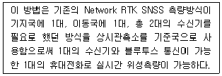
- VRS
- SLR
- DGPS
- Pseudo Kinematic
(정답률: 80%)
3. 표고 336.42m의 평탄지에서 거리 450m를 평균해면상의 값으로 보정하려고 할 때 보정량은? (단, 지구반지름은 6370km로 가정한다.)
- -2.38cm
- -2.56cm
- 1.28cm
- 3.28cm
(정답률: 54%)
4. 다음 설명 중 옳지 않은 것은?
- 측지학은 지구내부의 특성, 지구의 형상 및 운동을 결정하는 측정과 지구표면상 점간의 위치관계를 선정하는 측량에 기본이 되는 학문이다.
- 지각변동의 측정, 항로 등의 측량은 평면측량으로 한다.
- 측지측량은 지구의 곡률을 고려한 정밀한 측량이다.
- 측지학은 물리학적 측지학과 기하학적 측지학으로 구분할 수 있다.
(정답률: 80%)
5. GNSS의 방송궤도력에서 제공하는 정보로 옳은 것은?
- 위성과 수신기 사이의 거리
- 위성의 위치정보
- 대기 중 습도정보
- 수신시의 시계오차
(정답률: 68%)
6. GPS 위성과 수신기 간의 거리를 측정할 수 있는 재원과 관계가 먼 것은?
- P 코드
- C/A 코드
- L1 반송파
- E1 신호
(정답률: 86%)
7. 중력이상에 대한 설명으로 옳지 않은 것은?
- 중력이상이란 실제 관측 중력값에서 표준 중력식에 의해 계산한 중력값을 뺀 것이다.
- 지오이드의 요철, 지하구조의 결정 등에 이용된다.
- 일반적으로 실측 중력값과 계산식에 의한 이론 중력값은 일치하지 않는다.
- 중력이상이 (+)이면 그 부근에 밀도가 작고 가벼운 물질이 존재한다.
(정답률: 80%)
8. GNSS 관측의 정오차와 가장 거리가 먼 것은?
- 수신기 시계 오차
- 위성 시계 오차
- 위상 관측 오차
- 전리층과 대류권에 의한 오차
(정답률: 51%)
9. L2 반송파의 주파수가 약 1.2GHz하고 할 때, L2 반송파의 파장은? (단, 빛의 속도는 3.0×108m/s이다.)
- 5m
- 2.5m
- 0.5m
- 0.25m
(정답률: 62%)
10. 삼각점측량을 GPS측량에 의하여 작업할 때의 기선해석에 대한 설명으로 옳지 않은 것은?
- 기선해석의 결과는 FLOAT해에 의한다.
- GPS위성의 궤도요소는 정밀력 또는 방송력에 의한다.
- 기선해석의 방법은 세션(session)마다 단일기선해석에 의한다.
- 사이클슬립(cycle slip)의 편집은 원칙적으로 기선해석프로그램에 의하여 자동편집하나, 수동편집할 수도 있다.
(정답률: 70%)
11. 측지원점(Geodetic Datum)을 결정하기 위한 매개변수가 아닌 것은?
- 원점에서의 지오이드고
- 원점으로부터 최초 삼각측량의 기선에 이르는 방위각
- 원점에서 중앙 지오선의 연직선 편차
- 원점의 표준 중력
(정답률: 53%)
12. 우리나라가 속해 있는 UTM 좌표구역 52S에서 좌표 원점의 위치는?
- 동경 125°와 적도
- 동경 125°와 위도 38°
- 동경 129°와 적도
- 동경 129°와 위도 38°
(정답률: 58%)
13. 고정점으로부터 50km 떨어져 있는 미지점의 좌표를 GNSS관측으로 결정하려고 한다. 다음 중 가장 우수한 결과를 확보할 수 있는 조건은?
- 고정국 및 미지점에 각각 1주파용 수신기 및 안테나로 관측하고 위성궤도력은 보통력을 사용한다.
- 고정국 및 미지점에 각각 2주파용 수신기 및 안테나로 관측하고 위성궤도력은 정밀력을 사용한다.
- 고정국은 1주파용 수신기 및 안테나, 미지점은 2주파용 수신기 및 안테나로 관측하고 위성궤도력은 보통력을 사용한다.
- 고정국은 2주파용 수신기 및 안테나, 미지점은 1주파용 수신기 및 안테나로 관측하며 위성궤도력은 정밀력을 사용한다.
(정답률: 58%)
14. 지진파가 도달하지 않는 부분을 무엇이라 하는가?
- 레만면
- 모호면
- 암영대
- 구텐베르그 면
(정답률: 64%)
15. 지자기관측에 대한 설명으로 틀린 것은?
- 지자기방향이 자오선과 이루는 각을 편각이라 한다.
- 지자기방향이 수평면과 이루는 각을 복각이라 한다.
- 지자기 강도의 연직방향성분을 연직분력이라 한다.
- 북을 향하여 아래쪽으로 기우는 복각을 (-)로 표시한다.
(정답률: 71%)
16. 현재 운용되고 있는 GPS 위성의 궤도 경사각은?
- 50°
- 55°
- 63°
- 72°
(정답률: 70%)
17. 우리나라의 삼각점 성과표 상에 기재되어 있지 않은 사항은?
- 평면 직각좌표
- 표고
- 관측 방향각
- 경도와 위도
(정답률: 57%)
18. 구과량(A)과 구면삼각형 면적(B)의 관계로 옳은 것은? (단, α는 비례산수)
- A=α√B
- A=αㆍB
- A=α/B
- A=αㆍB2
(정답률: 68%)
19. 다음 중 지구좌표에 속하지 않는 것은?
- 지평좌표
- 경위도좌표
- UTM좌표
- UPS좌표
(정답률: 64%)
20. 다음 중 설명이 틀린 것은?
- 태양이 천구상의 어느 한 점에서 출발하여 다시 그 지점에 돌아오는데 걸리는 시간을 항성년이라 한다.
- 태양이 춘분점을 출발하여 다시 춘분점으로 돌아오는데 걸리는 시간을 회귀년이라 한다.
- 지구가 태양을 기준으로 한번 자전하는 시간을 1태양일이라 한다.
- 지구가 항성을 기준으로 한번 자전하는 시간을 1항성시라 한다.
(정답률: 53%)
2과목: 응용측량
21. 노선측량의 순서로 옳은 것은?
- 도상계획→답사→예측→실측→공사측량
- 도상계획→실측→예측→답사→공사측량
- 답사→예측→실측→공사측량→도상계획
- 답사→도상계획→실측→예측→공사측량
(정답률: 72%)
22. 교각 I=60°, 외할 E=15m로 원곡선을 설치할 때 원곡선의 곡선길이는?
- 110.25m
- 101.54m
- 55.70m
- 45.70m
(정답률: 51%)
23. 해양의 수십ㆍ지구자기ㆍ중력ㆍ지형ㆍ지질의 측량과 해안선 및 이에 딸린 토지의 특량은 무엇이라고 하는갸?
- 지적측량
- 수로측량
- 일반측량
- 공공측량
(정답률: 61%)
24. 그림과 같은 삼각형의 꼭지점 A로부터 밑변을 향해서 직선으로 a:b:c=5:3:2의 비율로 면적을 분할하기 위한 BP, PQ의 거리는? (단, BC=150mm)
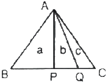
- BP=75m, PQ=45m
- BP=75m, PQ=50m
- BP=85m, PQ=45m
- BP=85m, PQ=50m
(정답률: 63%)
25. 그림과 같은 터널 내의 수준측량에서 측점 A의 표고를 50m, IㆍH=1.15m, HㆍP=0.56m, α=30°00‘, 두 점간의 경사거리 s'=20m일 때 천정에 설치한 B점의 표고는?
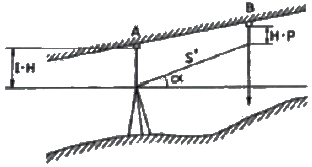
- 9.41m
- 10.04m
- 59.41m
- 60.04m
(정답률: 60%)
26. 지하시설물측량의 일반적인 절차로 옳은 것은?
- 작업계획 및 준비→시설물의 위치측량→조사→탐사→지하시설물 원도 작성
- 작업계획 및 준비→조사→탐사→시설물의 위치측량→지하시설물 윈도 작성
- 조사→작업계획 및 준비→탐사→시설물의 위치측량→지하시설물 윈도 작성
- 조사→탐사→작업계획 및 준비→시설물의 위치측량→지하시설물 윈도 작성
(정답률: 60%)
27. 캔트가 C인 노선의 곡선부에서 속도와 반지름을 모두 3배로 할 때 변화된 캔트는?
- C/3
- 1.5C
- 3C
- 9C
(정답률: 67%)
28. 노선의 기점에서 500m인 지점에 교점(I.P.)이 있다. 곡선반지름 R=120m, 교각 I=30°이면 원곡선 시점에서 시단현의 길이와 시단현에 대한 편각은? (단, 중심선 간격은 20m이다.)
- 시단현=7.85m, 편각=1°52‘27“
- 시단현=7.85m, 편각=2°54‘02“
- 시단현=12.15m, 편각=1°52‘27“
- 시단현=12.15m, 편각=2°54‘02“
(정답률: 43%)
29. 그림과 같이 A, B 두 지점을 연결하는 직선터널을 건설하고자 할 때
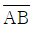
측선의 방위각은?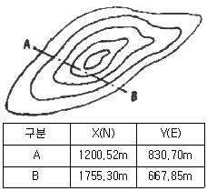
- 16°21‘33“
- 73°38‘27“
- 106°21‘33“
- 343°38‘27“
(정답률: 40%)
30. 사변형의 면적을 구하기 위하여 실측한 결과가 그림과 같을 때 사각형의 면적은?
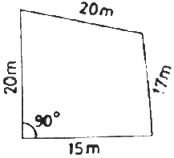
- 169.2m2
- 300.2m2
- 319.2m2
- 469.4m2
(정답률: 51%)
31. 하천측량에서 수위관측소의 설치장소에 대한 조건으로 옳지 않은 것은?
- 하상과 하안이 안전하고 세굴이나 퇴적이 생기지 않는 장소일 것
- 상ㆍ하류 약 100m 정도의 직선인 장소일 것
- 잔류 ac 역류가 없는 장소일 것
- 하저의 변화가 뚜렷한 장소일 것
(정답률: 71%)
32. 다음 중 축척과 면적에 대한 설명으로 옳은 것은?
- 축척 1:500 도면을 축척 1:1000으로 축소했을 때 도면의 크기는 1/4로 된다.
- 축척 1:500 도면을 1:500으로 확대했을 때 도면 크기가 2배가 된다.
- 축척 1:500 도면상의 면적은 실제면적의 1/25000이다.
- 지상 1km2 면적을 도면상에서 4cm2로 표시했을 때 축척은 1:5000이다.
(정답률: 61%)
33. 수직 터널에 의하여 터널 내외 연결측량에 대한 설명으로 옳지 않은 것은?
- 깊은 수직 터널에 있어서는 강선(피아노선)에 50~60kg이 되는 추를 단다.
- 깊은 수직 터널에 있어서는 보통 철선, 동선을 사용하며, 얕은 수직 터널에서는 강선을 사용한다.
- 수직 터널 밑에서 수선의 위치를 결정하는 데는 수선이 완전히 정지하지 않을 경우에는 수선 진동의 위치를 평균값으로 그 위치로 삼는 것이 적당하다.
- 수직 터널 밑에는 물이나 기름을 담은 통을 설치하고, 누린 추가 그 통 속에서 동요하지 않게 한다.
(정답률: 54%)
34. 3점법으로 하천의 평균유속을 구하기 위하여 수면에서 수심의 20%, 60%, 80% 깊이의 유속을 측정한 결과가 0.56s/s, 0.49m/s, 0.36m/s이었다면 평균유속은?
- 0.480m/s
- 0.475m/s
- 0.470m/s
- 0.443m/s
(정답률: 58%)
35. 하천의 유속 및 유량 관측 방법이 아닌 것은?
- 월류부에 의한 방법
- 수위-유량곡선에 의한 방법
- 하천기울기에 의한 방법
- 유출계수와 강우강도에 의한 방법
(정답률: 49%)
36. 하천측량에서 거리표 설치와 고저측량에 관한 설명으로 틀린 것은?
- 제방이 있는 경우 거리표는 하천의 중심에 직각방향으로 양안에 설치한다.
- 거리표는 반드시 기점으로부터 하천의 우안을 따라 500m 간격으로 설치한다.
- 횡단측량은 양안의 거리표를 기준으로 그 선상의 고저를 측량한다.
- 하천측량에서의 하천측량에서의 고저측량 작업은 거리표 설치, 종단 및 횡단측량, 심천측량 등을 포함한다.
(정답률: 62%)
37. 그림은 사각형 격자의 교점에서 절토고이다. 절토량은 얼마인가? (단, 구역의 크기는 가로 20m, 세로 10m로 동일하다.)
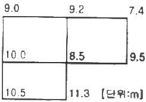
- 1357m3
- 2424m3
- 5580m3
- 6530m3
(정답률: 51%)
38. 클로소이드 곡선에 대한 설명으로 틀린 것은?
- 곡선 길이가 커지면 이정량(shift)도 커진다.
- 곡선길이에 비례하여 곡선반지름이 감소한다.
- 접선각(τ)이 일정한 경우 곡선 반지름(R)을 크게 하기 위해서는 큰 파라메타(A)를 사용한다.
- 클로소이드는 나선형 곡선의 일종이다
(정답률: 37%)
39. 도로의 노선측량에서 종단면도에 가재되지 않는 사항은?
- 용지의 경계
- 절토 및 성토고
- 계획고
- 곡선 및 경사
(정답률: 50%)
40. 우리나라는 평균적으로 하루 중에 두 번 발생하는 고조 및 저조의 높이가 다르게 나타나는데 이러한 조석현상을 무엇이라 하는가?
- 일조부등
- 월조간격
- 희귀조
- 혼합조
(정답률: 65%)
3과목: 사진측량 및 원격탐사
41. 수동적 센서(passive sensor)로 지표로부터 반사죄는 전자기파를 렌즈와 반사경으로 집광하여 필터를 통해 분광한 후 파장별로 구분하여 각각의 영상을 기록하는 감지기는?
- SAR
- Laser
- MSS
- SLAR
(정답률: 55%)
42. 항공사진의 촬영 요령에 대한 설명으로 옳지 않은 것은?
- 촬영경로는 노선을 구분하여 직선코스로 한다.
- 광범위한 지역은 동서 직선반향으로 코스를 정한다.
- 동일 코스내의 인접사진간의 중복도는 60% 정도로 한다.
- 인점 코스간의 종복도는 평지에서 50%, 산지에서 20% 정도로 한다.
(정답률: 63%)
43. 항공사진 상에서 축척을 구하는데 필요하지 않은 것은?
- 카메라 초점거리
- 사진의 거리
- 촬영고도
- 표고
(정답률: 62%)
44. 그림은 상호표정작업에서 6개 표정점의 종시차 이동현상을 표시한 것이다. 사용한 표정인자는?
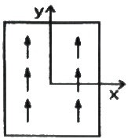
- ω
- bx
- by
- φ
(정답률: 54%)
45. 항공사진측량의 특징에 대한 설명으로 옳지 않은 것은?
- 사진은 충실히 촬영시점의 상황을 재현한다.
- 측량대상지역에 대한 촬영고도가 같을 경우 광각사진이 보통사진보다 축척이 크다.
- 대상물에 직접 접근할 필요가 없기 때문에 산악지역 등의 측량에 적합하다.
- 단일시에 넓은 지역을 촬영할 수 있기 때문에 성과에 동시성이 있고 균일한 정밀도를 유지시킬 수 있다.
(정답률: 57%)
46. 해석적 항공삼각측량 방법 중 정밀좌표관측기로 관측한 블록 내의 사진좌표를 이용하여 직접 절대좌표를 구하는 방법은?
- 독립모델법
- 다항식조정법
- 사진조정법
- 광속조정법
(정답률: 48%)
47. 해석적 내부표정에서 Affine 변환식으로 보정할 수 없는 현상은?
- 좌표축이 회전된 경우
- X축과 Y축의 축척이 서로 다른 경우
- 좌표 원점이 평행 이동된 경우
- 곡면을 평면으로 보정할 경우
(정답률: 49%)
48. 영상의 재배열 방버 중 16개의 화소값을 이용하여 보간하는 방법은?
- nearest-neighbor interpolation
- cubic convolution interpolation
- bilinear interpolation
- proximal interpolation
(정답률: 52%)
49. 원격탐사(remote sensing)에 관한 설명으로 옳지 않은 것은?
- 센서에 의한 지구표면의 정보취득이 쉽고, 관측자료가 수치화 되어 판독이 자동적이고 정량화가 가능하다.
- 정보수집장치인 센서로는 MSS(multispectral scanner), RBV(return beam vidicon) 등이 있다.
- 원격탐사는 원거리에 있는 대상물과 현상에 관한 정보(정자스펙트럼)를 해석하여 토지환경 및 자원문제를 해결하는 학문이다.
- 원격탐사는 정사투영을 위하여 인공위성에 의해서만 촬영되는 특수한 기법이다.
(정답률: 51%)
50. 촬영고도 6000m에서 초점거리 20.0cm의 사진기로 평탄지를 찍은 연직사진이 있다. 이 사진 상에 찍혀있는 비고(比高) 400m인 지대의 사진축척은?
- 1:22000
- 1:25000
- 1:28000
- 1:31000
(정답률: 48%)
51. 항공사진 촬영에서 투영중심점을 지나는 중력 방향의 직선이 사진면과 만나는 점은?
- 연직점
- 주점
- 등각점
- 부점
(정답률: 45%)
52. 항공사진에서 공선조건을 어긋나게 하는 요소가 아닌 것은?
- 대기의 굴절률
- 지표면의 기복
- 필름의 편평도
- 렌즈왜곡
(정답률: 30%)
53. 식물의 분광반사특성에 대한 설명으로 옳지 않은 것은?
- 식물의 가시광선 반사율은 잎의 엽록소에 영향을 받는다.
- 식물의 근적외선 반사율은 잎의 세포구조에 영향을 받는다.
- 식물의 잎에 수분이 많을수록 근적외선 반사율이 높아진다.
- 식물은 가시광선보다 근적외선의 반사율이 높다.
(정답률: 49%)
54. 격자(Raster)형태의 지리정보자료를 기하학적으로 보정하고 재배열하려한다. 재배열방법으로 최근린내삽법을 이용할 경우에 그림에서 X위치의 영상좌표로 역변환된 지리좌표에 할당해야 할 픽셀값은?(오류 신고가 접수된 문제입니다. 반드시 정답과 해설을 확인하시기 바랍니다.)
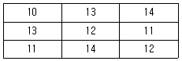
- 11
- 12
- 13
- 14
(정답률: 48%)
55. 실개구레이더(Real Aperture Radar)에서 전파의 방사 후 수신되기까지의 시간이 3×10-7초라면 거리방향해상도(range resolution)는? (단, 전파의 속도는 300000km/초 이다.)
- 10m
- 15m
- 40m
- 45m
(정답률: 28%)
56. 축척 1:20000의 항공사진을 180km/h로 촬영할 경우, 최대 허용 흔들림의 범위를 0.02mm로 한다면 최장노출시간은?
- 1/50초
- 1/75초
- 1/125초
- 1/150초
(정답률: 47%)
57. 초점거리 15.3cm의 카메라로 촬영된 연직사진의 평지 사진 축척은 1:25000이었다. 주점으로부터 60.4mm 떨어진 지점에서 평지로부터의 비고 100m에 의한 기복변위는?
- 1.6mm
- 2.3mm
- 3.0mm
- 5.7mm
(정답률: 43%)
58. 공간해상도가 높은 영상을 이용하여 해상도가 낮은 영상의 해상도를 높이는 기법은?
- 영상윱합
- 영상 모자이크
- 영상 파라미트
- 영상 기하 보정
(정답률: 51%)
59. 동서 30km, 남북 20km인 대상지역을 초점거리 150mm인 항공측량카메라를 이용하여 비행고도 6000m에서 촬영하였을 때, 입체모델수는? (단, 사진크기는 23cm×23cm, 종중복도 60%, 횡종복도 30%, 촬영은 동서방향으로 한다.)
- 24
- 30
- 36
- 42
(정답률: 51%)
60. 과고감에 대한 설명으로 옳지 않은 것은?
- 과고감은 기선고도비(B/H)에 반비례한다.
- 입체시 할 때 과장되어 보이는 정도이다.
- 과고감은 같은 카메라로 촬영 시 종중복도에 반비례한다.
- 평면축척보다 수직축척이 크기 때문에 산이 더 높게 보인다.
(정답률: 44%)
4과목: 지리정보시스템
61. 벡터구조보다 비교할 때 래스터구조의 특징에 대한 설명으로 옳지 않은 것은?
- 자료의 구조가 단순하다.
- 레이어의 중첩이나 분석이 용이하다.
- 속성정보의 추출 및 갱신이 용이하다.
- 그래픽 정확도가 낮다.
(정답률: 37%)
62. 그림과 같이 래스터데이터 A, B가 있다. 논리연산 (A="forest') xor (B ＜5)에 의한 결과로 옳은 것은?
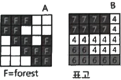
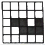
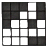
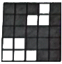
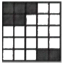
(정답률: 32%)
63. 지리정보시스템(GIS)에서 사용하는 수치지도를 제작하는 일반적인 방법이 아닌 것은?
- 항공사진을 촬영하여 수치지도 제작
- 항공사진 필름을 고감도 복사기로 인쇄하여 수치지도 제작
- 인공위성데이터를 이용하여 수치지도 제작
- 디지티이저를 이용하여 종이지도로 제작
(정답률: 41%)
64. 메타데이터(matadata)의 요소 중 데이터의 제목, 지리적 범위 및 자료 획득방법 등에 관한 정보는?
- 식별정보(identification information)
- 자료품질정보(data quality information)
- 공간참조정보(spatial reference information)
- 배포정보(distribution information)
(정답률: 41%)
65. 수치지형도에 대한 설명으로 옳지 않은 것은?
- 수치지형도란 지표면 상의 각종 공간정보를 일정한 축척에 따라 기호나 문자, 속성으로 표시하여 정보시스템에서 분석, 편집 및 입ㆍ출력할 수 있도록 제작된 것을 말한다.
- 수치지형도 작성이란 각종 지형공간정보를 취득하여 전산시스템에서 처리할 수 있는 형태로 제작하거나 변환하는 일련의 과정을 말한다.
- 정위치편집이란 지리조사 및 현지측량에서 얻어진 자료를 이용하여 도화 데이터 또는 지도입력 데이터를 수정 및 보완하는 작업을 말한다.
- 구조화편집이란 지형도 상에 기본도 도곽, 도엽명, 사진도곽 및 번호를 표기하는 작업을 말한다.
(정답률: 50%)
66. A지점에 2명, B지점에 1명, C지점에 3명, D지점에 4명 등 A, B, C, D 4개의 지점에 10명의 사람이 있다. 10명 모두가 모일 경우 사람들의 총 이동거리를 최소로 할 수 있는 지점의 좌표는?
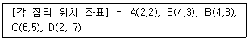
- (1.4, 1.7)
- (1.4, 5.0)
- (3.4, 1.7)
- (3.4, 5.0)
(정답률: 45%)
67. 수치지형모델(DIM)을 활용하는 분야로 가장 거리가 먼 것은?
- 상권의 소비특정분석
- 음영기복
- 적지분석
- 도로설계의 절성토
(정답률: 61%)
68. 입체영상 중 하나의 영상에서 특정한 위치에 해당하는 실제의 객체가 다른 영상의 어느 위치에 촬영되어 있는지를 발견하는 작업은?
- 감독분류(supervised classification)
- 영상정합(image matching)
- 공간필터링(spatial filtering)
- 영상재배열(image resampling)
(정답률: 48%)
69. 관계형 데이터베이스를 위한 산업 표준으로 사용되고 있으며, 처리단위가 집합적인 언어로 모든 관계를 대수식으로 표현 할 수 있는 언어는?
- SQL
- JAVA
- QGIS
- Python
(정답률: 60%)
70. 지리정보시스템(GIS)을 이용한 공간 모델링 결과의 불확실성을 평가하기 위해 주로 사용하는 방법은?
- 경제성 분석
- 타당성 분석
- 민감도 분석
- 분산 분석
(정답률: 35%)
71. 그림은 셀에 대한 국소저항값이다. 음영 표시한 셀에서 국소저항이 5인 셀로 이동할 때의 최소비용경로는?
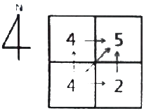
- →N→E
- →E→N
- →NE
- NW
(정답률: 50%)
72. 다음 중 DBMS의 기본적인 기능과 거리가 먼 것은?
- 정밀한 그래픽 생성
- 효율적인 데이터 저장
- 대용량 데이터 관리
- 신속한 데이터 검색
(정답률: 56%)
73. 지리정보시스템(GIS) 공간객채 타입 중 구조가 다른 것은?
- 선분(line segment)
- 연속선분(string)
- 격자셀(grid cell)
- 호(ac)
(정답률: 57%)
74. 벡터 데이터 모델에서 속성정보가 가질 수 있는 척도가 아닌 것은?
- 서열척도
- 등간척도
- 비율척도
- 가치척도
(정답률: 47%)
75. 지리정보시스템(GIS) 데이터베이스의 관리 및 구축 시 적용하는 DBMS 방식의 내용으로 옳지 않은 것은?
- 파일처리방식의 단점을 보완한 방식이다.
- DBMS 프로그램은 독립적으로 운영될 수 있다.
- 데이터베이스와 사용자 간 모든 자료의 흐름을 조정하는 중앙제어역할이 가능하다.
- DBMS 프로그램은 자료의 신뢰와 동시 사용을 위하여 단일 프로그램으로 구성된다.
(정답률: 41%)
76. 지리정보시스템(GIS)의 공간분석 기능 중 중첩기능에 대해 설명으로 옳지 않은 것은?
- 중첩영상 대상 레이어들은 동일 공간을 포함하여야 한다.
- 벡터 중첩연산은 래스터 중첩연산에 비하여 빠르다.
- 중첩연산은 산술연산 뿐만 아니라 논리연산도 가능하다.
- 공간데이터 뿐만 속성데이터도 중첩연산이 가능하다.
(정답률: 46%)
77. 지하시설물 데이터베이스(DB) 구축 후의 효율적인 유지관리 방안으로 가장 거리가 먼 것은?
- 관리체계가 구축되니 후 변화들에 대한 신속하고 지속적인 모니터링
- 지하시설물의 DB는 항상 현재성 유지
- 사용자들의 추가적인 요구사항 반영
- 전산체계의 갱신, 운영, 관리의 신기술 체험을 위한 주기적인 시스템 재개발
(정답률: 44%)
78. 데이터 형식 중 지리정보시스템(GIS)에서 사용하는 도형정보나 수치지도의 호환을 위하여 사용되는 형식이 아닌 것은?
- ASCII 형식
- DXF 형식
- SDTS 형식
- SHP 형식
(정답률: 45%)
79. 지리정보시스템(GIS)의 분석방법 중 교통로와 시가지 확장 사이의 관례를 설명하기 위해 사용하는 방법으로 가장 적합한 것은?
- 점 사상과 선 사상의 중첩
- 선 사상과 면 사상의 중첩
- 면 사상과 점 사상의 중첩
- 면 사상과 면 사상의 중첩
(정답률: 61%)
80. 지리정보시스템(GIS)의 자료처리 단계를 순서대로 바르게 표시한 것은?
- 자료의 수치화-자료조작 및 관리-응용분석-출력
- 자료조작 및 관리-자료의 수치화-응용분석-출력
- 자료의 수치화-응용분석-자료조작 및 관리-출력
- 자료조작 및 관리-응용분석-자료의 수치화-출력
(정답률: 47%)
5과목: 측량학
81. 축척 1:5000 지형도에서 면적 8km2의 토지에 대한 도상면적은?
- 0.0032m2
- 0.016m2
- 0.32m2
- 1.6m2
(정답률: 46%)
82. 경중률에 관한 설명으로 옳지 않은 것은?
- 경중률은 관측횟수에 비례한다.
- 경중률은 노선거리에 반비례한다.
- 경중률은 확률오차의 제곱에 비례한다.
- 경중률은 표준편차의 제곱에 반비례한다.
(정답률: 37%)
83. 일반적으로 주곡선의 등고선 간격을 결정하는데 가장 중요한 요소는?
- 도면의 축척
- 지역의 넓이
- 지형의 상태
- 내업에 필요한 시간
(정답률: 54%)
84. 트래버스 측량의 조정에서 컴퍼스 법칙에 의한 조정방법에 대한 설명으로 옳은 것은?
- 각 측량의 정밀도가 거리 측량의 정밀도보다 높을 때 적용되는 방법이다.
- 거리 측량의 정밀도가 각 측량의 정밀도보다 높을 때 적용되는 방법이다.
- 위거와 경거의 폐합(결합)오차를 각 측선에 이르는 위거(또는 경거)의 크기에 비례하여 그 조정량을 구한다.
- 위거와 경거의 폐합(결합)오차를 각 측선의 거리에 비례하여 그 조정량을 구한다.
(정답률: 22%)
85. 미지수 x, y를 포함하고 있는 다음과 같은 비선형방정식이 있다. 최소제곱조정을 위하여 초기값을 x=1, y=1이라고 가정할 경우 첫 번째 반복(iteration)에 의한 x, y의 추정값은?
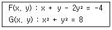
- x=2.25, y=2.75
- x=2.35, y=2.85
- x=2.25, y=2.95
- x=2.15, y=2.65
(정답률: 26%)
86. 각관측 장비의 조정에 대한 설명으로 옳지 않은 것은?
- 기포관축과 수평축은 직교해야 한다.
- 수평축과 연직축은 직교해야 한다.
- 수평축과 시준축은 직교해야 한다.
- 기포관축과 연직축은 직교해야 한다.
(정답률: 27%)
87. 삼각측량에 의한 관측 결과가 그림과 같을 때, C점의 좌표는? (단, AB의 거리=10m, 좌표의 단위:m)
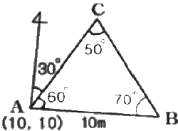
- (6.13, 10.62)
- (10.62, 6.13)
- (16.13, 20.62)
- (20.62, 16.13)
(정답률: 32%)
88. 다음과 같은 수준측량 성과에서 측점 4의 지반고는?
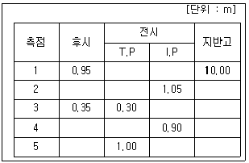
- 9.90m
- 10.00m
- 10.10m
- 10.65m
(정답률: 43%)
89. 줄자로 40m를 관측할 때, 양단의 고저차가 42cm이었다면 수평거리의 보정값은?
- -1.2mm
- -2.2mm
- -3.3mm
- -4.4mm
(정답률: 41%)
90. 그림과 같이 편심관측을 하여 S1=2000m, S2=1000m, e=0.1m, T'=120°, Ψ=300°의 결과를 얻었을 때, ∠X1, ∠X2는?(오류 신고가 접수된 문제입니다. 반드시 정답과 해설을 확인하시기 바랍니다.)
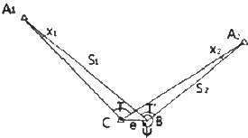
- ∠X1=3", ∠X2=6"
- ∠X1=5", ∠X2=10"
- ∠X1=10", ∠X2=20"
- ∠X1=15", ∠X2=30"
(정답률: 30%)
91. 트래버스 측량의 각 관측에서 허용범위 이내의 오차가 발생하였을 경우의 오차배분에 대한 설명으로 옳지 않은 것은?
- 각 관측의 정확도가 같을 때는 오차를 각의 대소에 관계없이 등분하여 배분한다.
- 각 관측은 경중률이 같을 경우에는 각의 크기에 비례하여 배분한다.
- 각 관측의 경중률이 다를 경우에는 그 오차를 경중률을 고려하여 배분한다.
- 변길이의 역수에 비례하여 각각의 관측각에 배분한다.
(정답률: 36%)
92. 등고선에 대한 설명으로 틀린 것은?
- 등고선은 절벽, 동굴과 같은 지형에서는 서로 교차하기도 한다.
- 경사가 급할수록 등고선의 간격이 좁다.
- 경사가 같으면 등고선 간격이 일정하다.
- 등고선은 최대경사선과는 직교하고 분수선과는 평행하다.
(정답률: 56%)
93. 레벨을 조정하기 위하여 그림과 같이 설치하여 BC=CD=50m, AB=10m일 때 B에서 관측값이 b1=1.262m, B2=1.726m, D에서의 관측값이 d1=1.745m, d2=2.245m일 때 조정량은?
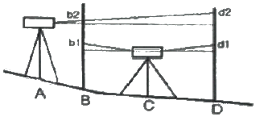
- 0.0001rad
- 0.0004rad
- 0.0007rad
- 0.0009rad
(정답률: 43%)
94. 수준측량의 오차 중 정오차가 아닌 것은?
- 표척눈금이 정확하지 않을 때 오차
- 표척의 영눈금 오차
- 시차에 의한 오차
- 시준선 오차
(정답률: 39%)
95. “공간정보의 구축 및 관리 등에 관한 법률” 제정의 목적에 해당되는 것은?
- 국제적 기준의 측량 기술에 확보에 기여
- 공간정보의 활용 향상에 기여
- 국민의 소유권 보호에 기여
- 측량업자의 권익 향상에 기여
(정답률: 41%)
96. 공공측량의 정의에 대한 설명 중 아래의 “각 호의 측량”에 대한 기준으로 옳지 않은 것은?
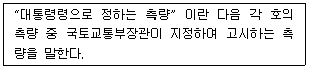
- 측량실시지역의 면적이 1제곱킬로미터 이상인 기준점측량, 지형측량 및 평면측량
- 촬영지역의 면적이 10제곱킬로미터 이상인 측량용 사진의 촬영
- 국토교통부장관이 발생하는 지도의 축척과 같은 축척의 지도 제작
- 인공위성 등에서 취득한 영상정보에 좌표를 부여하기 위한 2차원 또는 3차원의 좌표측량
(정답률: 44%)
97. 직각좌표의 기준 중 동해좌표계의 적용구역으로 옳은 것은?
- 동경 126°~128°
- 동경 128°~130°
- 동경 130°~132°
- 동경 132°~134°
(정답률: 43%)
98. 공간정보를 체계적으로 정리하여 사용자가 검색하고 활용할 수 있도록 가공한 정보의 집합체로 정의되는 것은?
- 공간정보데이터베이스
- 국가공간정보통합체계
- 공간정보관리시스템
- 공간정보체계
(정답률: 41%)
99. 고의로 측량성과를 사실과 다르게 한 자에 대한 벌칙 기준은?
- 3년 이하의 징역 또는 3천만원 이하의 벌금
- 2년 이하의 징역 또는 2천만원 이하의 벌금
- 1년 이하의 징역 또는 1천만원 이하의 벌금
- 3백만원 이하의 과태료
(정답률: 49%)
100. 공공측량시행자는 공공측량성과를 얻은 경우에는 지체 없이 그 사본을 누구에게 제출하여야 하는가?
- 국토교통부장관
- 시ㆍ도지사
- 행정안전부장관
- 공간정보산업협회장
(정답률: 58%)